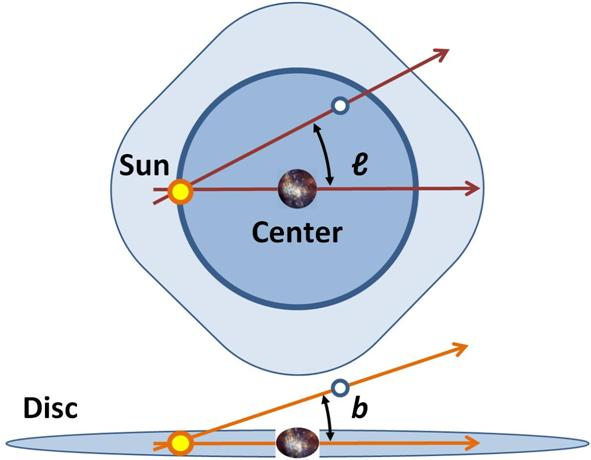

Le grandezze in astronomia

Le grandezze fondamentali
- Posizione
- Distanza
- Massa
- Luce
Come ci orientiamo in cielo?
Gli Asterismi e le costellazioni
- Facili da imparare
- Utili per trovare il Nord
- Non sempre visibili
Gli asterismi e le costellazioni
Gli asterismi e le costellazioni
Gli asterismi e le costellazioni
Le coordinate altazimutali
- Altezza
- Azimut
- Zenit e Nadir
- Semplici da utilizzare
- Essenziali in osservazione terrestre
- Non seguono il percorso degli astri
Le coordinate altazimutali

Le coordinate equatoriali
-
Proiezione in cielo delle coordinate terrestri
- AscensioneRetta
- Declinazione
- Poli
- Meridiano e Equatore
- Più difficili da utilizzare
-
Seguono la posizione delle stelle in cielo (circa)
- Precessione degli equinozi
Le coordinate equatoriali

Le coordinate galattiche
- Incentrate sul Sole
- Longitudine galattica
- Latitudine galattica
Le coordinate galattiche

Come misuriamo le distanze?
- Metri?
- Chilometri?
- Tanti km alla volta?
Sistema solare
L'Unità Astronomica
Sistema solare
L'Unità Astronomica
- Mercurio: 0.387 au
- Venere: 0.723 au
- Marte: 1.524 au
- Giove: 5.209 au
- Saturno: 9.539 au
- Urano: 19.18 au
- Neptune: 30.06 au
- Fascia di Kuiper: 35-55 au
- Vojager 1: 139 au
Lo spazio
Anno luce
- Sole: 8.33 minuti luce
- Plutone: 5.4 ore luce
- Proxima Centauri: 4.23 al
- Diametro Via Lattea: 100 000 al
- Galassia di Andromeda a 2.5 milioni al
- Diametro Gruppo Locale: 10 milioni al
-
Quasar più vicino (3C 273) a 3 miliardi di anni luce
-
Vojager 1 a 61000 km/h percorrerà 1 al in 17700 anni
Le masse
- Le masse terrestri
- Le masse solari
La luce
La luminosità
- Magnitudine assoluta
- Magnitudine apparente
La luce
Esempi di magnitudini apparenti
- Sole: -26.73
- Sole visto da Nettuno all'afelio: -18.20
- Sirio: -1.47
- Vega: 0.03
- M31: 3.44
- M33: 5.72
- Limite occhio umano ~7